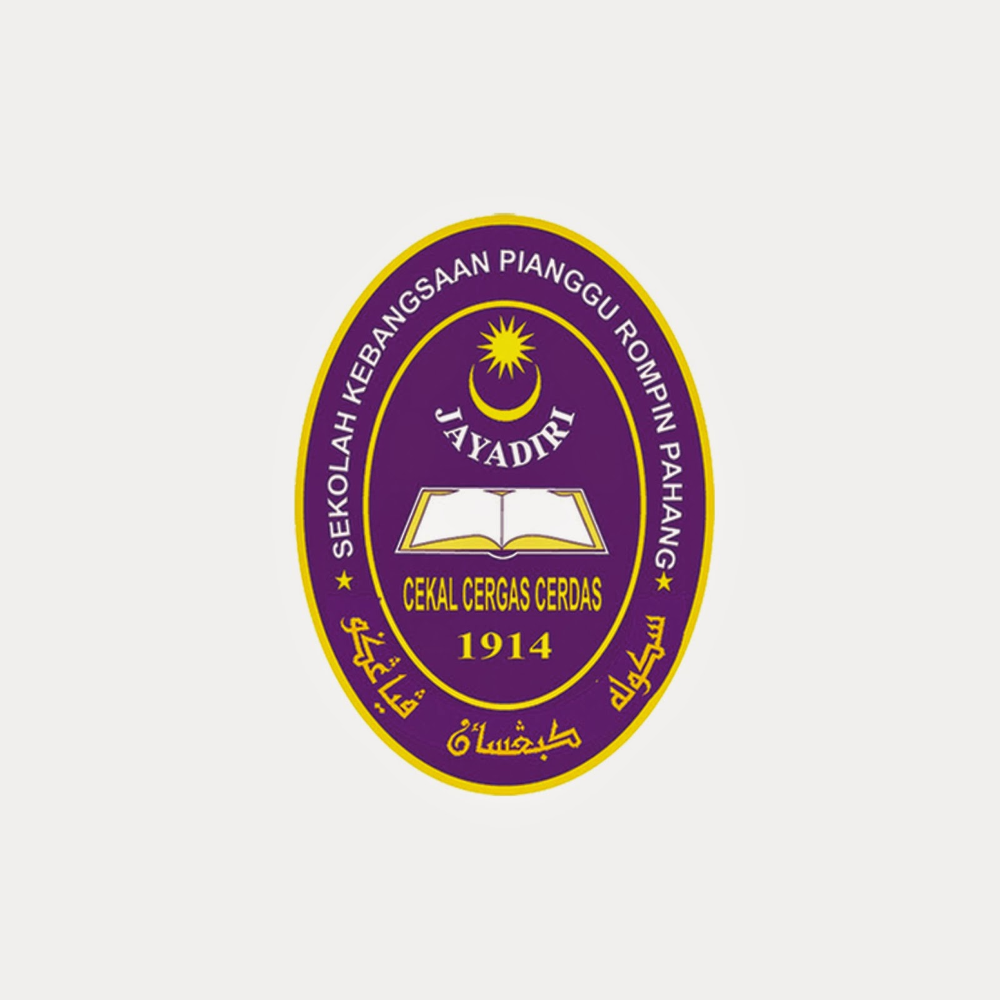
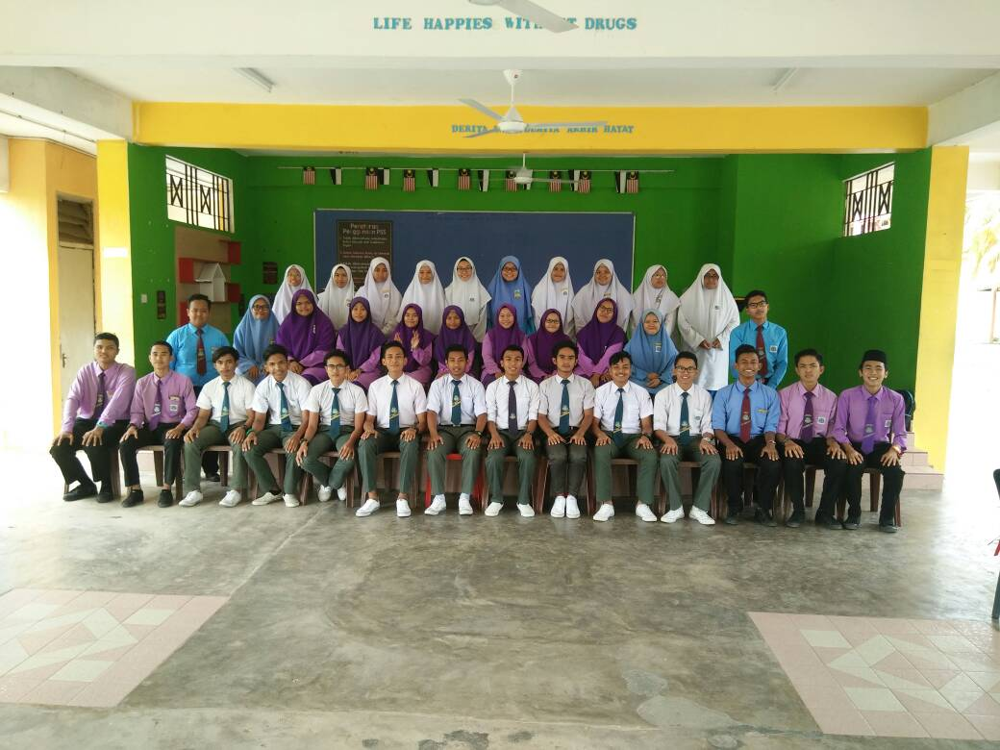

SK PIANGGU
SMKTG
UITM

My primary school is Sekolah Kebangsaan Pianggu. The years that I study here is 2007 - 2012 is about 6 years that I study in that school.
Besides, my UPSR results is I got 2A 2B 1C. I joned Pandu Puteri for my cocurriculum. There are many activities that I joned when I in Pandu puteri
such as I also get experience in camping. For my class I stayed at the same class for six years. I remember as a student, I wasn't diligent
student but I finished the school without any problem.
My secondary school is Sekolah Menengah Kebangsaan Tanjung Gemok. I remember this school have create many memories which is memory with
friends and teachers. Is about five years that I study in my secondary school. Besides, for my SPM results I got 4A 4B 1C. I really satisfied with my results
because I am not really good in academic, so after I got the results I really grateful because I can make my family proud of me. In my secondary school
I really actives in joined of activities. For my cocurriculum in secondary school i joined Puteri Islam. For me Secondary school is the best one in creating
memories.

After my SPM results, I continued in Form 6 at the same school of my secondary school. After I got results of my upu that I got in
at UITM Merbok, kedah in Diploma Information Management. I take dicision that I continue studies at UITM. For sem 1 I really do not
understand what is Information Management but after take 2 years in this diploma, it really interesting and give many lessons.
I also AJK Protocol in club Sejarah Warisan UITM Kedah. Now is my final year in UITM, I hope that I get graduate in time.

(2013 - 2017) SMK Tanjung Gemok
 SK PIANGGU
SK PIANGGU